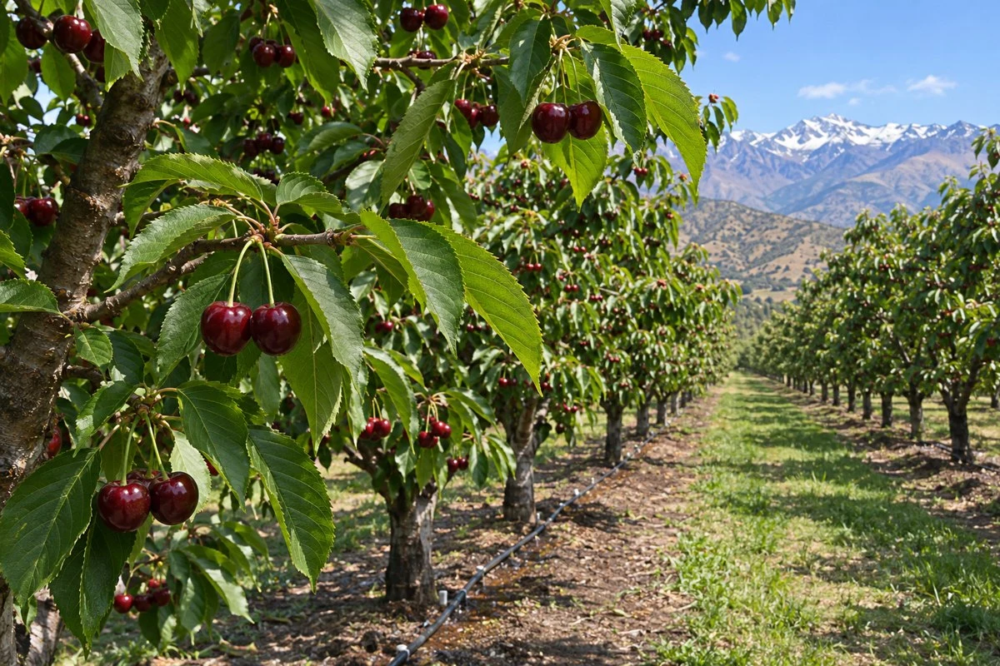

FRUTICULTURA · NIVEL INICIAL A INTERMEDIO
Cerezo y manejo productivo
Aprende a planificar una temporada de cereza dulce en Chile. Toma decisiones de campo con registros de clima, agua, cuaja, calidad y costos.

Lo que podrás hacer
- Evalúa sitio, variedades, portainjertos y polinizantes.
- Calcula densidad, cuaja, riego y aceptación de fruta.
- Organiza monitoreo, cosecha, frío y costos por lote.
Programa de doce temas
- Sitio, clima y objetivo comercial
- Dormancia, frío y fenología
- Variedades y portainjertos
- Polinización y cuaja
- Establecimiento y marco de plantación
- Conducción, poda y manejo de carga
- Riego y verificación del sistema
- Nutrición y diagnóstico del huerto
- Sanidad y monitoreo integrado
- Partidura, coberturas y riesgo de lluvia
- Madurez, cosecha y trazabilidad
- Poscosecha, cadena de frío y costos
Para quién es
Estudiantes, productores y equipos que quieren entender el ciclo del cerezo y ordenar sus registros. Puedes resolver las prácticas con datos simulados y una calculadora.
Fuentes técnicas del curso
Muestra gratuita
Revisa seis diapositivas del primer tema y resuelve un ejercicio de superficie neta del huerto.
Abrir muestra →Evaluación y certificados
Completa las doce lecciones y responde correctamente al menos 21 de 30 preguntas para habilitar tus certificados de participación y aprobación de CAMPO EDUCA.
Encargado del curso
José Ignacio Farías · Ingeniero Agrícola
Lecturas técnicas
- INIA. Cultivo del cerezo para la zona sur de Chile
- INIA. Producción de cerezo en la Región del Maule
- INIA. Frío invernal y primavera en frutales
- INIA. Variedades de cerezo dulce
- INIA. El cerezo, guía técnica
- FAO 56. Evapotranspiración del cultivo
- SAG. Cancro bacteriano Psm
- INIA. Cosecha y poscosecha de cerezas
- UC Davis. Ficha de poscosecha de cereza